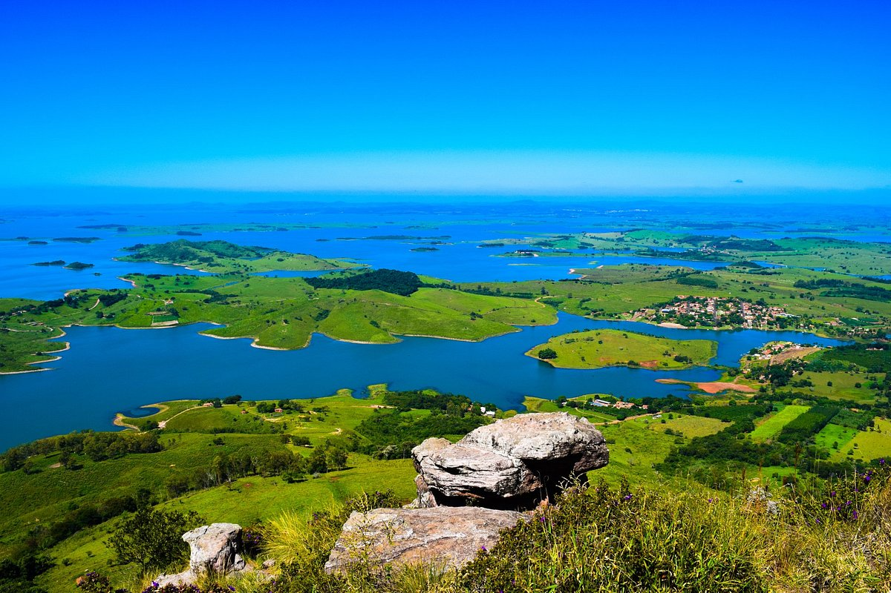

<!DOCTYPE html>
<html lang="pt-br">
</html>
<title>Morro do Gavião</title>
    <meta charset="UTF-8">
    <meta http-equiv="X-UA-Compatible" content="IE=egde">
    <meta name="viewport" content="width=device-width, initial-scale=1.0 ">
    <link rel="stylesheet" href="index.css">
 </head>

<body>
    <header>
        <div class="center">
          </img>
        </div>
        <h1>Morro do Gavião</h1>
      </header>
<main>
<section>
<p>
    O Morro do Gavião é um dos pontos mais emblemáticos e procurados em Ribeirão Claro, no estado do Paraná, destacando-se por sua imponência natural e por ser um destino popular entre os amantes da natureza e dos esportes de aventura.

    A história do Morro do Gavião está intrinsecamente ligada ao desenvolvimento e à colonização da região de Ribeirão Claro. Desde o final do século XIX, quando os primeiros colonizadores chegaram à área, o morro se destacou como uma formação geográfica proeminente, servindo como um ponto de referência natural. O nome "Morro do Gavião" deriva da presença frequente dessas aves de rapina na região, que são vistas planando sobre o morro.
    
    Inicialmente, o Morro do Gavião era conhecido principalmente pelos moradores locais, que valorizavam o local por sua vista panorâmica deslumbrante e pela diversidade de sua flora e fauna. Ao longo dos anos, à medida que a infraestrutura e o acesso ao local foram melhorando, o morro começou a atrair visitantes de fora da região, transformando-se em um importante ponto turístico.
    
    O Morro do Gavião também ganhou notoriedade por ser um local ideal para a prática de esportes de aventura, como escalada, rapel e voo livre, atividades que atraem entusiastas de todo o Brasil. Sua altitude e formação rochosa oferecem condições perfeitas para esses esportes, além de proporcionar uma experiência única de contato com a natureza.
    
    Além de sua importância como destino de aventura, o Morro do Gavião possui um valor ambiental significativo. Ele faz parte do ecossistema local e contribui para a preservação de diversas espécies de plantas e animais. Os esforços de conservação e manejo sustentável são essenciais para manter a integridade ecológica do morro e garantir que ele continue sendo um refúgio natural para a vida selvagem e um local de lazer para as pessoas.
    
    Atualmente, o Morro do Gavião é um dos principais atrativos turísticos de Ribeirão Claro, celebrando tanto a beleza natural quanto a história de exploração e valorização do ambiente local. Ele simboliza a conexão entre a comunidade e a natureza, promovendo o ecoturismo e a preservação ambiental.
    
    A história do Morro do Gavião é, portanto, uma história de descoberta, valorização e preservação de um marco natural que continua a inspirar e encantar moradores e visitantes de Ribeirão Claro.
</section>
</main>


</body>